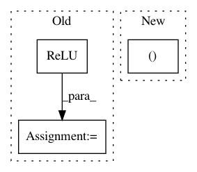

c94623ad0dac5fa5ce7a9a3c4ecb794351ebc610,tests/python/frontend/tflite/test_forward.py,,_test_relu,#Any#Any#,2870
Before Change
if package_version.parse(tf.VERSION) < package_version.parse("2.1.0"):
pytest.skip("Testcase requires tflite version >= 2.1.0")
data_in = tf.keras.layers.Input(shape=data.shape[1:])
relu = tf.keras.layers.ReLU()(data_in)
keras_model = tf.keras.models.Model(inputs=data_in, outputs=relu)
input_name = data_in.name.split(":")[0]
// To create quantized values with dynamic range of activations, needs representative dataset
def representative_data_gen():
for i in range(1):
yield [data]
tflite_model_quant = _quantize_keras_model(keras_model, representative_data_gen)
tflite_output = run_tflite_graph(tflite_model_quant, data)
tvm_output = run_tvm_graph(tflite_model_quant, data, input_name)
tvm.testing.assert_allclose(
After Change
inq_data = tf.quantization.fake_quant_with_min_max_args(
in_data, min=-10, max=10, name="inq_0"
)
input_range = {"inq_0": (-10, 10)}
out = nn_ops.relu(inq_data)
out = tf.quantization.fake_quant_with_min_max_args(out, min=0, max=6, name="out")
compare_tflite_with_tvm(
In pattern: SUPERPATTERN
Frequency: 3
Non-data size: 3
Instances
Project Name: apache/incubator-tvm
Commit Name: c94623ad0dac5fa5ce7a9a3c4ecb794351ebc610
Time: 2020-10-29
Author: anshuman.t@huawei.com
File Name: tests/python/frontend/tflite/test_forward.py
Class Name:
Method Name: _test_relu
Project Name: osmr/imgclsmob
Commit Name: 3761a6c08e41e610e1fed4f972492b9705e9f884
Time: 2019-04-16
Author: osemery@gmail.com
File Name: pytorch/pytorchcv/models/others/oth_ntsnet4.py
Class Name: ProposalNet
Method Name: forward
Project Name: osmr/imgclsmob
Commit Name: 57c40574673c3d0d35076234d3e55b46a3be5891
Time: 2018-08-23
Author: osemery@gmail.com
File Name: pytorch/models/nasnet.py
Class Name: BranchSeparablesStem
Method Name: __init__